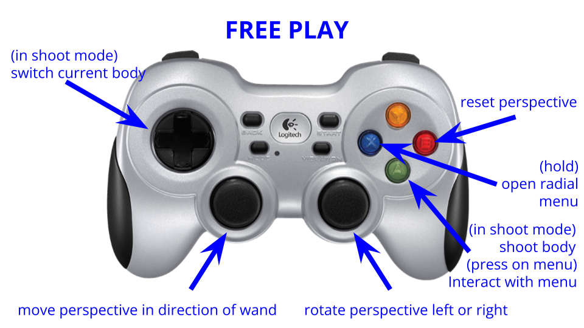
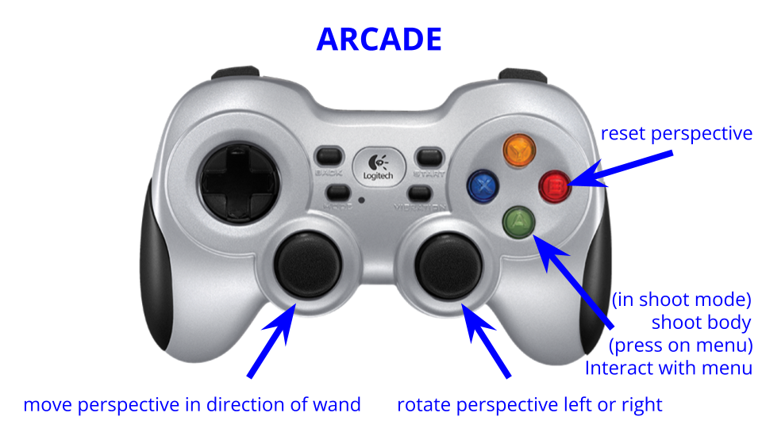
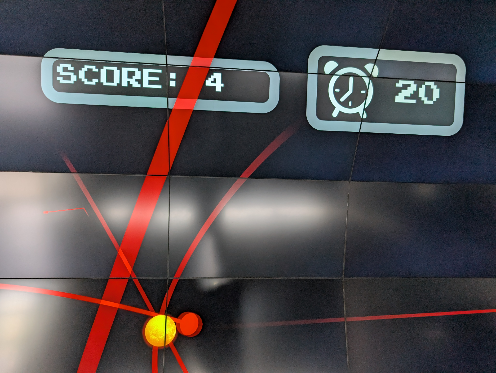

N-body simulator game
How to run
You can run this software through the Unity app launcher, its title is nbody-stellarstreams. Please consult the quick-start guide if you are having trouble!
Note: This activity has built-in music! To make use of it, make sure the system audio is on (consult the relevant troubleshooting section if it isn’t).
How to control
When you launch the software, you’ll be presented with a main menu. There are two modes available: free play and arcade, each with a different set of controls.

Starting off with free play, here the player is given free rein to launch bodies and shape the simulation in a number of ways.
{kind=link}
Holding the blue button brings up a radial menu with a set of options. The ball shoot icon toggles body shoot mode, the weight icon toggles self-particle mode (where the player itself becomes a body in the n-body simulation), the refresh icon removes all bodies, the settings icon opens the settings menu, and the back button quits free play mode and takes you back to the main menu from before.

When shoot mode is on, the player can choose between three bodies to shoot using the d-pad: the small (green) bodies, the large (red) bodies and a blue body which shoots a bunch of small bodies at once. They all gravitate around the central Sun body.

The other option on the main menu is the arcade mode. When this is selected, the player gets 30 seconds to shoot bodies and get as many orbiting around the central Sun as possible.
{kind=link}
Only the large bodies are enabled in this mode, as they are sufficiently massive to impact the trajectories of other red bodies, making it more challenging to have many bodies orbiting around the Sun at once.
{kind=link}
When the timer runs out, the game ends and reports the final number of bodies orbiting the central Sun. If a high score is achieved, the player is prompted to enter a three character name for themselves; this gets logged into the software’s record automatically!

The science
The motion of all bodies in the simulation is computed each frame using a direct all-pairs approach in three dimensions. This implementation is not super performant, and players will notice the software start to lag at around 100 bodies. Changing the n-body simulation to use a more efficient algorithm like Barnes-Hut would be a good avenue for improvement!